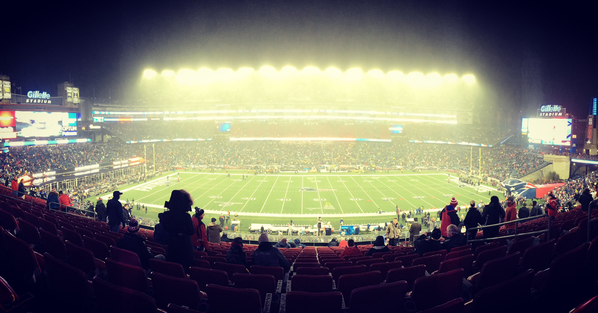
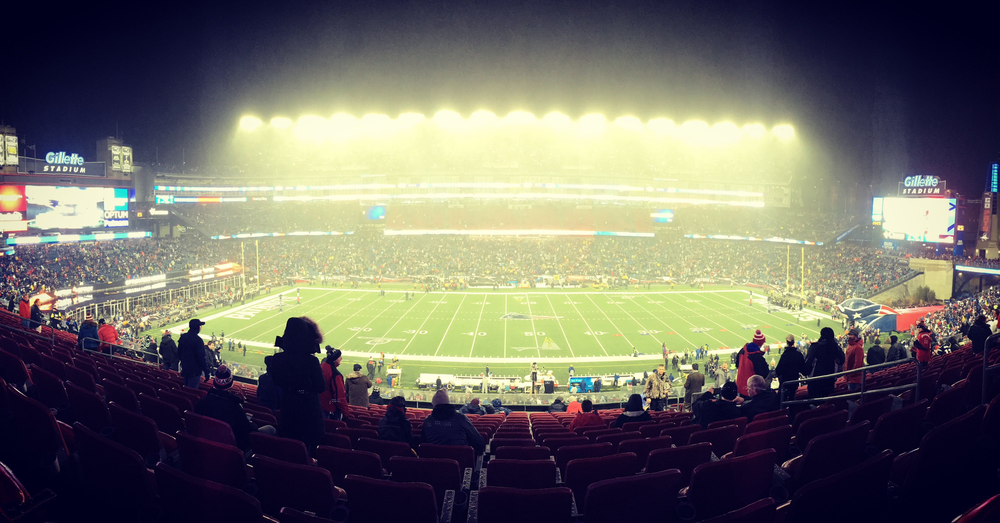
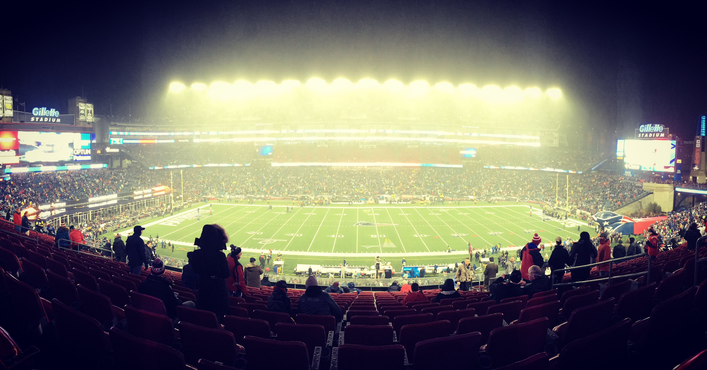

Most of the fun times of my life up to this point have come from highschool, I have a really good group of friends back home and also live in a beautiful town. It's hard to believe how fast high school flew by. I won't necessarily miss the school but will miss everything that came with it, the sports, friendship, and just growing up in general is what I will really miss the most. I plan to keep capturing all the fun times in my life and all the scenery I plan to explore.
